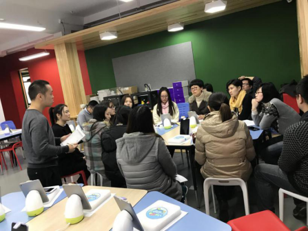
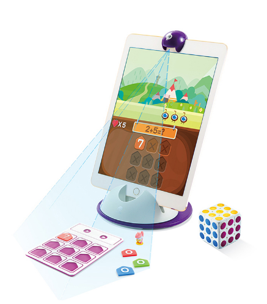
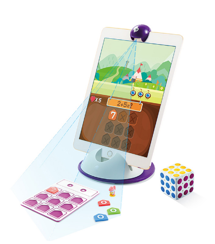

上海世外集团小学选择葡萄培养未来人才
2017年1月18日，葡萄教育进入上海世外集团小学，为世外小学的师生们展示了葡萄教育的教学过程。
世界外国语小学极具名气，成立于1993年，以国际化为手段，本土化为目的，融合各国的教育优势，解构引进的课程。在课程选择中，世外小学极具发展的眼光，着眼于未来。
在全球信息化和人工智能的大潮之下，信息素养与计算思维是未来儿童必备的素养和技能。
在科技领域：谷歌用硬件（Chromebook）、操作系统Chrome、云服务、投资（Google Venture和CapitalG）投身于教育；微软用PC、office操作系统、云服务Azure、Minecraft游戏、人工智能等方式切入教育；苹果用IPAD等教育设备、ConnectED教育项目、收购等方式进入教育。
而葡萄教育在这个大趋势下布局面向未来的儿童教育生态，从葡萄架——智能终端PaiBot、藤蔓——教育版OS（操作系统）和葡萄——葡萄教育独创 TAG体系(Toy科技玩具、Animation动画和Game游戏),三个层面来打造葡萄智慧教育体系。
这套体系得到了上海世外集团小学的认可。在展示过程中，Paibot和Hello编程这两款葡萄教育中的明星产品，吸睛十足。
（葡萄培训师正在给康外老师培训）

（葡萄教育的老师给康外学生上课）
Paibot机器人电脑是葡萄教育的智能终端，这款产品获得了“2016中国互联网速途风云榜”评定的“年度最具发展潜力智能硬件”荣誉奖项。Hello编程这款产品此款产品曾作为“脑动大联盟”的比赛工具，获得了广大家长和孩子的喜爱。

世外小学与葡萄教育的合作是对未来教育方式的探索，无论是世外小学还是葡萄教育都将在这条道路上不断精进。

（学生自由体验葡萄产品）

 
